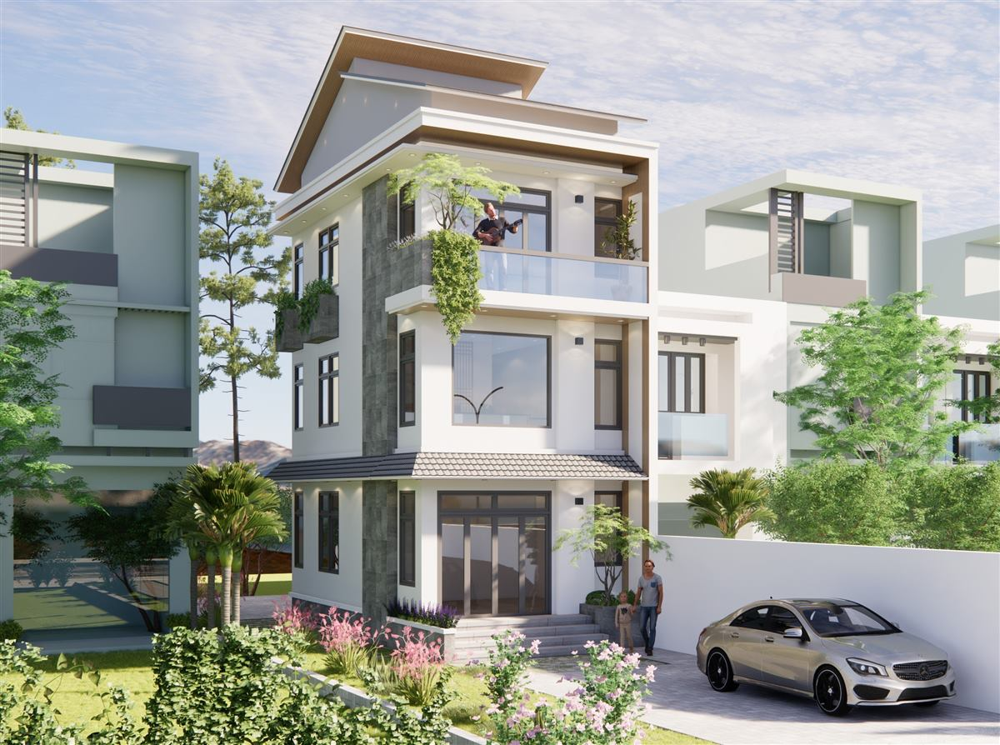
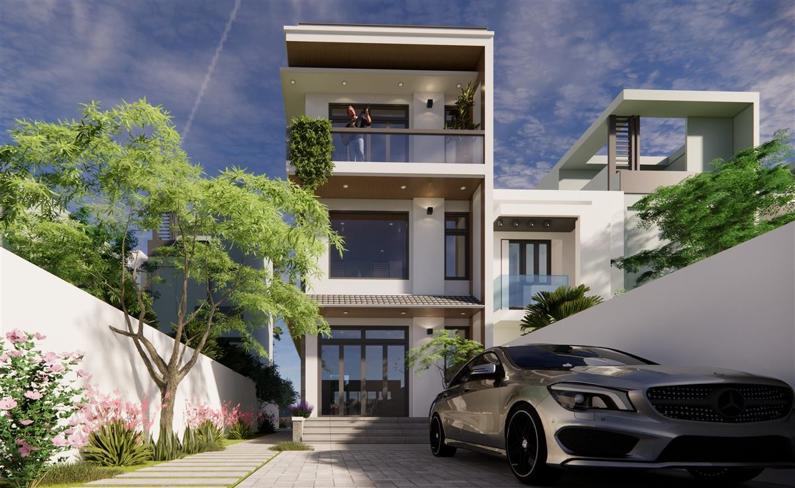
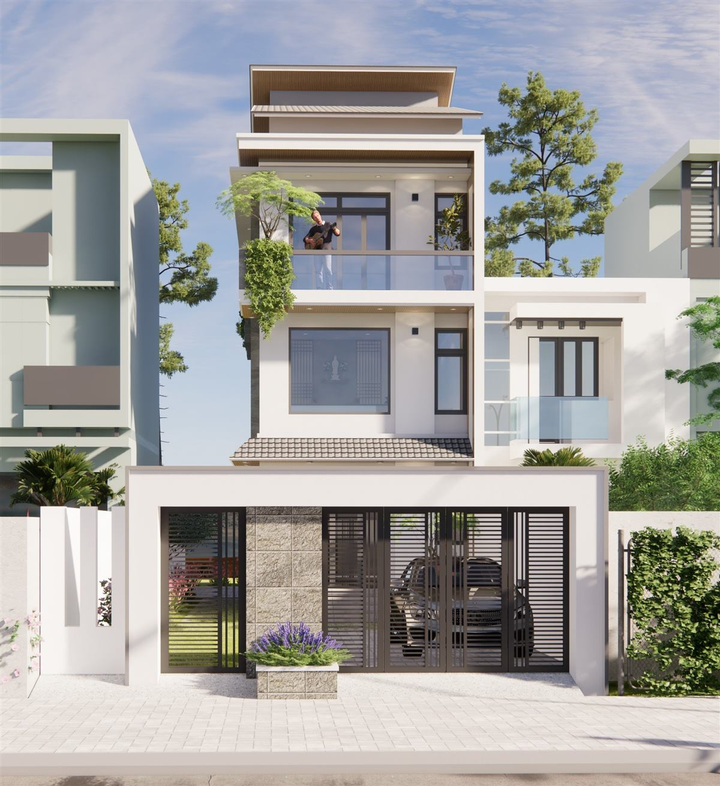
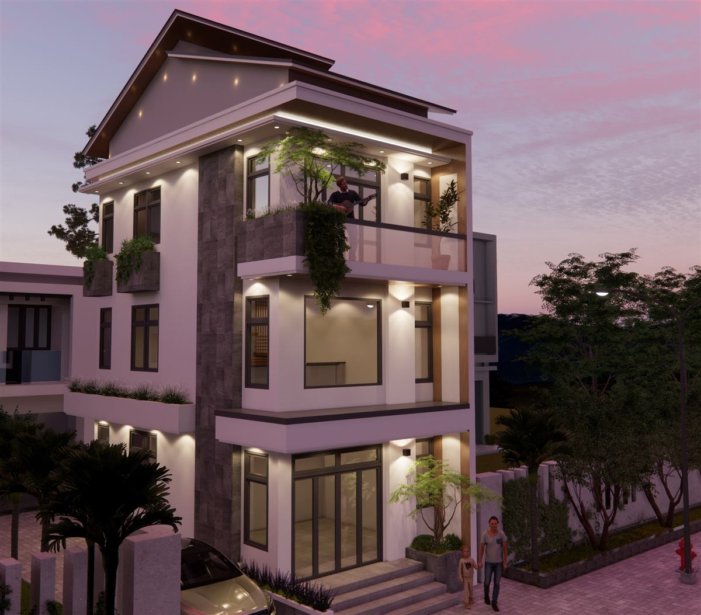
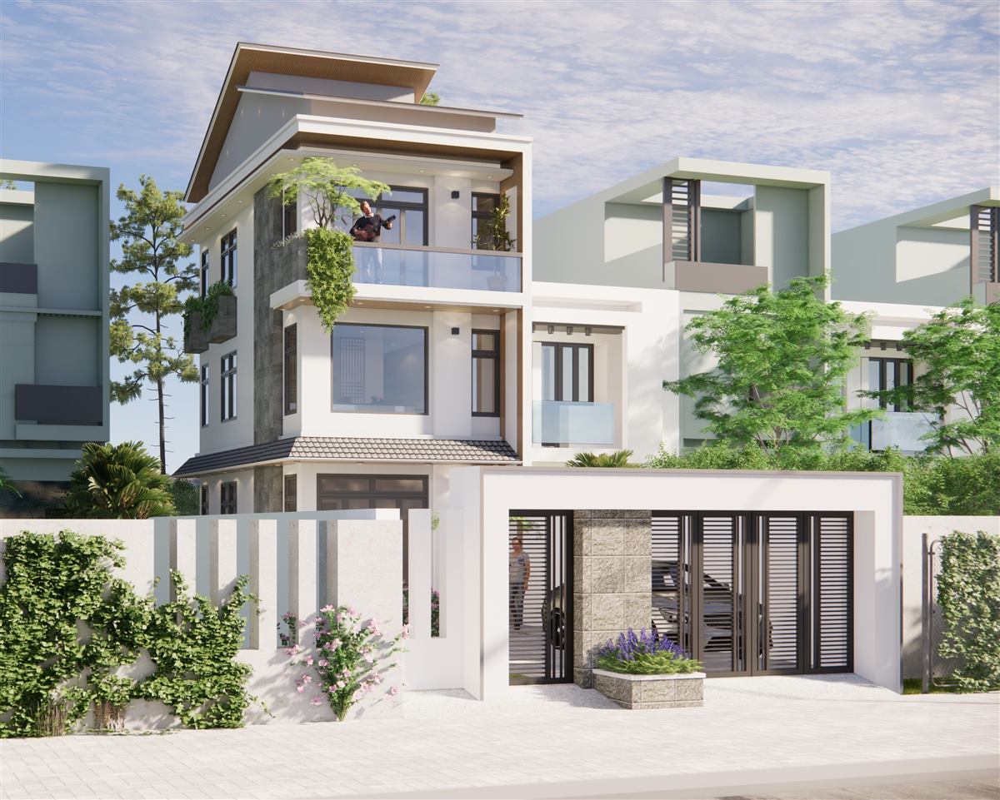

Mẫu nhà phố có sân trước nhiều cây, mái dốc lệch và ban công cây leo
Giữa những dãy nhà sát nhau, một khoảng sân nhỏ phía trước thường làm thay đổi hẳn cảm giác về ngôi nhà. Mẫu nhà phố có sân trước nhiều cây này được Đại Phát Decor dựng phối cảnh 3D ở cả ban ngày lẫn lúc hoàng hôn. Công trình có mái dốc lệch trên đỉnh, ban công treo dây leo và lối vào đi xuyên qua lớp cây hoa, đáng để anh chị tham khảo nếu lô đất có khoảng lùi.

Tổng quan công trình
Bộ năm ảnh cho thấy ngôi nhà nhiều tầng đặt giữa các căn hàng xóm có hình khối tương đồng. Phía trước có sân và lối đi, một số góc thấy rõ ô tô đỗ ngay trên sân. Hai phiên bản mặt tiền xuất hiện trong bộ ảnh: một bản có tường rào và cổng ở phía trước, một bản mở thoáng hơn với bãi cây. Nhờ vậy, người xem có thể so sánh hai cách xử lý phần tiếp giáp với đường.

Mẫu nhà phố có sân trước nhiều cây được bố cục ra sao
Khoảng sân được chia thành nhiều phần. Lối đi lát tấm thẳng dẫn tới bậc cấp, hai bên là cây bụi và hoa màu hồng, đặt sát bức tường trắng thấp. Cách làm này giúp người đi vào nhà phải đi qua một vùng cây xanh, tạo sự chuyển tiếp từ đường phố ồn ào vào không gian riêng. Trên các tầng, ban công lan can kính được treo thêm cây leo, nên mảng xanh không chỉ nằm dưới mặt đất mà trải dần lên mặt tiền.

Mặt tiền và màu sắc
Thân nhà màu sáng, xen mảng xám đậm chạy dọc ở một bên. Mái dốc nhô ra trên cùng có mặt dưới sáng màu, phía trước là ban công rộng. Ở phiên bản có cổng, phía trước có trụ đá sáng màu và các cánh cổng thanh đen, trông vững chãi hơn phần phía trên. Ảnh hoàng hôn cho thấy đèn tường và đèn trong nhà tạo các mảng sáng ấm, nổi bật trên nền trời hồng tím.


Lưu ý khi xây mẫu nhà này
Muốn có khoảng xanh như trong ảnh, gia đình nên tính những điểm sau ngay từ đầu:
- Kiểm tra khoảng lùi cho phép, vì sân trước phụ thuộc vào quy định và kích thước thực tế của lô đất.
- Chừa sẵn đường nước tưới cho cả sân lẫn ban công, tránh phải kéo ống lộ sau này.
- Cây leo trên ban công cần giàn đỡ và cần được cắt tỉa, nếu không dễ che mất cửa sổ.
- Tham khảo cách tính chi phí thiết kế để chuẩn bị thông tin trước khi trao đổi về báo giá.
Hỏi đáp ngắn
Lô đất không có khoảng lùi thì có áp dụng được không?
Có thể giữ phần mặt tiền và ban công cây xanh, nhưng lối đi và vườn trước phải bỏ hoặc thay bằng chậu cây đặt ở tầng trên.
Có nên chọn phiên bản có tường rào không?
Tường rào giúp riêng tư và an toàn hơn, nhưng làm sân hẹp lại về mặt thị giác. Nên chọn theo vị trí nhà và thói quen của gia đình.
Mái dốc lệch có tác dụng gì?
Ngoài việc tạo dáng cho đỉnh nhà, mái dốc giúp thoát nước nhanh và che nắng cho sân thượng hoặc tầng trên cùng, tùy cách bố trí thật.
Mẫu liên quan
- Mẫu nhà phố cổng gỗ tường rào cao
- Mẫu nhà phố cửa vòm kính lan can vàng
- Mẫu nhà phố góc 2 mặt tiền hiện đại
Xem thêm
- Nhà góc đường mặt tiền hoa gió
- Mẫu nhà phố trắng khung mái hở
- Tất cả mẫu nhà và dịch vụ thiết kế của Đại Phát Decor
Liên hệ tư vấn
Gửi kích thước đất và mong muốn, Đại Phát Decor sẽ trao đổi phương án và báo giá.